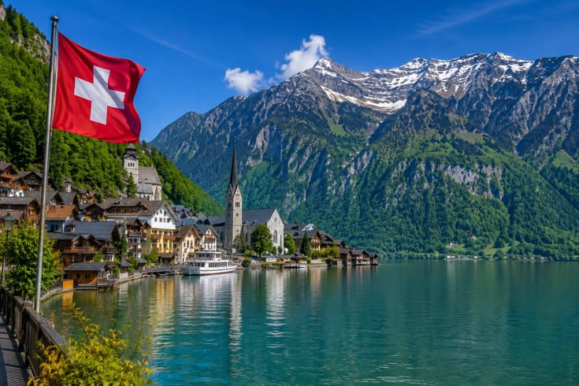
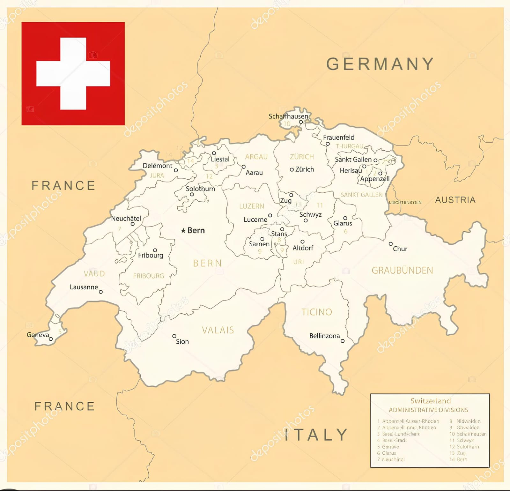
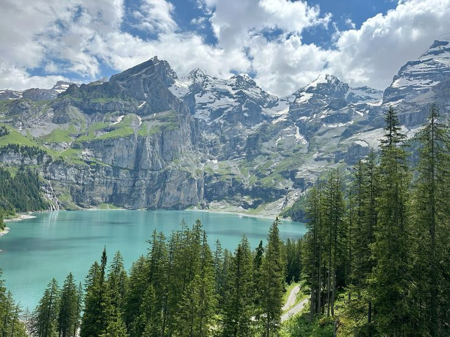

Sejarah

Swiss bermula dari perjanjian rahasia (Sumpah Rütli) pada 1291, saat tiga wilayah Alpen bersatu melawan penjajahan keluarga kerajaan (Wangsa) Habsburg. Aliansi ini terus meluas ke wilayah lain, hingga kemerdekaan Swiss diakui dunia pada 1648.
Setelah sempat dijajah Prancis, para pemimpin Eropa berkumpul dalam rapat besar (Kongres Wina) tahun 1815 dan menetapkan status netral abadi, artinya Swiss berjanji tidak akan pernah ikut perang negara lain. Aturan negara kemudian diperkuat lewat undang-undang dasar pada 1848 yang menyatukan seluruh provinsi (kanton) menjadi satu negara yang solid. Status anti-perang inilah yang menyelamatkan Swiss dari Perang Dunia dan mengubahnya menjadi negara paling makmur hingga hari ini.
Geografis

Swiss adalah sebuah mahakarya alam berbentuk negara terkurung daratan seluas 41.285 kilometer persegi yang terletak tepat di jantung Eropa Tengah. Bentang alamnya terbagi menjadi tiga kawasan unik, didominasi oleh kemegahan Pegunungan Alpen di selatan yang dipenuhi puncak bersalju abadi, serta Pegunungan Jura di barat laut yang berupa perbukitan kapur berhutan lebat. Di antara kedua benteng raksasa ini, terhampar Dataran Tinggi Swiss (Mittelland), sebuah kawasan berbukit subur yang membentang luas menjadi pusat pemukiman, kota-kota besar, perekonomian, sekaligus lahan pertanian utama bagi negara yang berbatasan langsung dengan lima negara Eropa ini.
Meskipun tidak memiliki garis pantai, Swiss dijuluki sebagai "menara air" Eropa karena menjadi hulu bagi sungai-sungai legendaris seperti Sungai Rhine dan Sungai Rhone yang mengalir membelah benua. Daratannya juga dihiasi oleh ribuan danau glasial yang jernih, seperti Danau Jenewa dan Danau Zurich, yang memantulkan keindahan langit di sekitarnya. Variasi ketinggian yang ekstrem ini menciptakan iklim sedang yang sangat dinamis, di mana kehangatan musim panas di wilayah dataran rendah dapat berubah menjadi badai salju yang dingin di puncak gunung dalam waktu yang bersamaan, menjadikan geografis Swiss tidak hanya indah secara visual tetapi juga strategis bagi jalur budaya Eropa.
Wisata
Destinasi wisata di Swiss secara umum terbagi menjadi dua kategori utama, yaitu pegunungan Alpen yang megah dan kota-kota tepi danau yang bersejarah. Negara ini terkenal dengan sistem transportasi kereta apinya yang sangat terintegrasi, pemandangan salju abadi, serta desa-desa bebas kendaraan mobil.
Jungfraujoch

Destinasi ini sangat terkenal karena merupakan salah satu tempat terindah untuk menikmati pemandangan Pegunungan Alpen. Jungfraujoch terletak di ketinggian 3.454 mdpl. Destinasi winter ini sendiri berupa cekungan dataran salju abadi Alpen yang diapit dua puncak gunung, yakni puncak Jungfrau dengan tinggi 4.158 mdpl dan Moench setinggi 4.170 mdpl. Banyak aktivitas musim dingin di Swiss yang bisa lakukan di Jungfraujoch, seperti mendaki, bermain salju, bermain ski, makan di restoran puncak gunung dengan pemandangan amazing, hingga snowboarding. Untuk menuju ke sini, wisatawan tak perlu repot mendaki karena dapat menggunakan kereta listrik yang dinamakan Jungfraubahn. Letak stasiunnya yang sangat tinggi ini membuat Jungfraujoch dikenal dengan sebutan "Top of Europe".
Bern's Old Town

Bern's Old Town telah menjadi situs Warisan Dunia UNESCO sejak 1983. Kota ini memang sangat memukau dengan bangunan serta gang-gang kunonya yang menawan. Kota ini juga dijadikan contoh bagus untuk perencanaan kota yang jelas dan progresif.
Danau Oeschinen

Danau Oeschinen adalah Situs Warisan Dunia UNESCO. Oleh banyak orang, danau di Swiss ini dianggap sebagai danau terindah di Pegunungan Alpen. Permukaannya bagaikan cermin yang memantulkan refleksi gunung yang mengelilinginya.
Terletak di atas Kandersteg, Danau Oeschinen merupakan danau yang dialiri aliran glasial dari puncak tiga ribu meter Blüemlisalp, Oeschinenhorn, Fründenhorn, dan Doldenhorn.